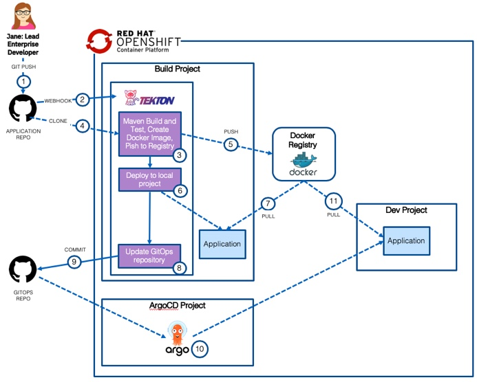
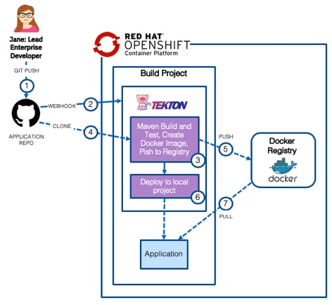

Application Modernization: WebSphere Runtime Modernization Solution
Run it yourself
Detailed step-by-step instructions are available to deploy the solution in your environment:
- Deploy the solution on OCP 4.3 using Tekton and ArgoCD
- Deploy the solution on OCP 4.3 using Tekton
- Deploy the solution on OCP 4.3 using Jenkins
- Deploy the solution on OCP 3.11 using Jenkins
Introduction
Runtime modernization moves an application to a 'built for the cloud' runtime with the least amount of effort. WebSphere Liberty is a fast, dynamic, and easy-to-use Java application server, built on the open source Open Liberty project. Ideal or the cloud, Liberty is a combination of IBM technology and open source software, with fast startup times (<2 seconds), no server restarts to pick up changes, and a simple XML configuration.
However, WebSphere Liberty doesn't support all of the legacy Java EE and WebSphere proprietary functionality and some code changes maybe required to move an existing application to the new runtime. Effort is also required to move the application configuration from traditional WebSphere to WebSphere Liberty's XML configuration files.
This path gets the application on to a cloud-ready runtime container which is easy to use and portable. However, the application is mostly unchanged and has not been 'modernized' to a newer architecture such as micro-services
Applications deployed on the WebSphere Liberty container runtime can be build, deployed and managed with the same common technologies and methodologies that would be used by cloud-native (built for the cloud) applications.
The diagram below shows the high level decision flow where IBM Cloud Transformation Advisor is used to analyze existing assets and a decision is made to move the monolithic application to the Liberty container.

This repository holds a solution that is the result of a runtime modernization for an existing WebSphere Java EE application that was moved from WebSphere ND v8.5.5 to WebSphere Liberty and deployed by the IBM CloudPak for Applications to RedHat OpenShift.
Application Overview
The Customer Order Services application is a simple store-front shopping application, built during the early days of the Web 2.0 movement. Users interact directly with a browser-based interface and manage their cart to submit orders. This application is built using the traditional 3-Tier Architecture model, with an HTTP server, an application server, and a supporting database.

There are several components of the overall application architecture: - Starting with the database, the application leverages two SQL-based databases running on IBM DB2.
- The application exposes its data model through an Enterprise JavaBean layer, named CustomerOrderServices. This components leverages the Java Persistence API to exposed the backend data model to calling services with minimal coding effort.
- This build of the application uses JavaEE6 features for EJBs and JPA.
- The next tier of the application, named CustomerOrderServicesWeb, exposes the necessary business APIs via REST-based web services. This component leverages the JAX-RS libraries for creating Java-based REST services with minimal coding effort.
- This build of the application is using JAX-RS 1.1 version of the respective capability.
- The application's user interface is exposed through the CustomerOrderServicesWeb component as well, in the form of a Dojo Toolkit-based JavaScript application. Delivering the user interface and business APIs in the same component is one major inhibitor our migration strategy will help to alleviate in the long-term.
- Finally, there is an additional integration testing component, named CustomerOrderServicesTest that is built to quickly validate an application's build and deployment to a given application server. This test component contains both JPA and JAX-RS-based tests.
How the Application was Modernized
In order to modernize the application from WebSphere ND v8.5.5 to WebSphere Liberty running on OpenShift, the application went through analysis, build and deploy phases.
Analysis
IBM Cloud Transformation Advisor was used to analyze the existing Customer Order Services application and the WebSphere ND runtime. The steps were:
-
Install IBM Cloud Transformation Advisor either in to a Kubernetes Cluster or locally
-
Download and execute the Data Collector against the existing WebSphere ND runtime
-
Upload the results of the data collection in to IBM Cloud Transformation Advisor and review the analysis. A screenshot of the analysis is shown below:

-
In the case of the CustomerOrderServicesApp.ear application, IBM Cloud Transformation Advisor has determined that the migration to WebSphere Liberty on Private Cloud is of Moderate complexity and that there are two Severe Issues that have been detected.
-
Drilling down in to Detailed Migration Analysis Report that is part of the application analysis, it is apparent that IBM Cloud Transformation Advisor has detected that there are issues with lookups for Enterprise JavaBeans and with accessing the Apache Wink APIs.

-
Behavior change on lookups for Enterprise JavaBeans In Liberty, EJB components are not bound to a server root Java Naming and Directory Interface (JNDI) namespace as they are in WebSphere Application Server traditional. The fix for this is to change the three classes that use
ejblocalto use the correct URL for Liberty -
The user of system provided Apache Wink APIs requires configuration To use system-provided third-party APIs in Liberty applications, you must configure the applications to include the APIs. In WebSphere Application Server traditional, these APIs are available without configuration. This is a configuration only change and can be achieved by using a
classloaderdefinition in the Liberty server.xml file. -
In summary, some minimal code changes are required to move this application to the WebSphere Liberty runtime and the decision was taken to proceed with these code changes.
Detailed, step-by-step instructions on how to replicate these steps are provided here
Build
The build phase made changes to source code and created the WebSphere Liberty configuration artifacts. The steps were:
-
Make the simple code changes required for the EJB lookups which were recommended by IBM Cloud Transformation Advisor. The three Java classes that should be modified to look up Enterprise JavaBeans differently are shown in the detailed analysis view of IBM Cloud Transformation Advisor:

-
Below is an example of the code changes required for one of the three Java classes. The
org.pwte.example.resources.CategoryResource.javais changed from usingejblocalon line 28 as shown below:
Before:
...
InitialContext().lookup("ejblocal:org.pwte.example.service.ProductSearchService");
...
After:
...
InitialContext().lookup("java:app/CustomerOrderServices/ProductSearchServiceImpl!org.pwte.example.service.ProductSearchService");
...
-
The WebSphere Liberty runtime configuration files
server.xml,server.envandjvm.optionswere created from the templates provided by IBM Cloud Transformation Advisor. The final versions of files can be found here: -
WebSphere Liberty was configured for application monitoring using Prometheus and the Prometheus JMX Exporter. This was necessary to integrate WebSphere Liberty with the RedHat OpenShift monitoring framework.
-
The
Dockerfilerequired to build the immutable Docker Image containing the application and WebSphere Liberty was created from the template provided by IBM Cloud Transformation Advisor. The final file for use with Jenkins can be found here: -
The final
Dockerfilefile for use with Tetkon/OpenShift Pipelines can be found here: -
The containerized application was tested locally before the code and configuration files were committed to the git repository
Detailed, step-by-step instructions on how to replicate these steps are provided here
Deploy using Tekton and ArgoCD
The following steps will deploy the modernized Customer Order Services application in a WebSphere Liberty container to a Red Hat OpenShift cluster using OpenShift Pipelines and ArgoCD.
The diagram below shows the following flow:
-
1) A developer commits code to the
application repository -
2) A webhook starts a
tekton pipelinerunning in thebuildproject -
3) A
tekton taskclones the application source code (4) from the application repository, usesMavento compile and test the application before usingbuildahto create aDocker imagewhich is pushed to the docker registry (5) -
6) A
tekton taskdeploys theapplicationto the local namespace using the image from thedocker registry(7) -
8) A
tekton taskupdates thegitops repositorywith thedocker image tagfor the newly created docker image and commits the change (9) -
10) ArgoCD is used to
synchronizethe changes from the gitops repository with thedevnamespace -
11) The application running in the
devnamespace is updated with the latest docker image from the registry

Detailed, step-by-step instructions on how to replicate these steps are provided here
Deploy using Tekton
The following steps will deploy the modernized Customer Order Services application in a WebSphere Liberty container to a Red Hat OpenShift cluster using OpenShift Pipelines.
The diagram below shows the following flow:
-
1) A developer commits code to the
application repository -
2) A webhook starts a
tekton pipelinerunning in thebuildproject -
3) A
tekton taskclones the application source code (4) from the application repository, usesMavento compile and test the application before usingbuildahto create aDocker imagewhich is pushed to the docker registry (5) -
6) A
tekton taskdeploys theapplicationto the local namespace using the image from thedocker registry(7)

Detailed, step-by-step instructions on how to replicate these steps are provided here
Deploy using Jenkins on OCP 4.3
The deploy phase created the Jenkins, Kubernetes and RedHat OpenShift artifacts required to automate the build and deployment pipeline for the application. For illustration purposes, the application was deployed to three different RedHat OpenShift projects to simulate development, staging and production. The diagram below shows the flow through the pipeline. A more detailed description can be found here

The steps were:
-
Configure the RedHat OpenShift Cluster for WebSphere by creating the necessary
SecurityContextConstraintsdefinition. The file can be found here: -
Create the RedHat OpenShift build template that would be used to define the RedHat OpenShift artifacts related to the build process including
ImageStreamandBuildConfigdefinitions. The file can be found here: -
Create the RedHat OpenShift deployment template that would be used to define the RedHat OpenShift artifacts related to the Customer Order Services application including
DeploymentConfig,ServiceandRoutedefinitions. The file can be found here: -
Create the Jenkins
Jenkinsfilefor the pipeline. The Jenkinsfile defines the steps that the pipeline takes to build the Customer Order Services application EAR file, create an immutable Docker Image and then move the image through thedev,stageandprodenvironments. The file can be found here: -
Create the
buildproject, load the build template and configure Jenkins -
Create the
dev,stageandprodprojects and load the deployment template -
Verify the pipeline.
Detailed, step-by-step instructions on how to replicate these steps are provided here
Deploy using Jenkins on OCP 3.11
The deploy phase created the Jenkins, Kubernetes and RedHat OpenShift artifacts required to automate the build and deployment pipeline for the application. For illustration purposes, the application was deployed to three different RedHat OpenShift projects to simulate development, staging and production. The diagram below shows the flow through the pipeline. A more detailed description can be found here
The steps were:
-
Configure the RedHat OpenShift Cluster for WebSphere by creating the necessary
SecurityContextConstraintsdefinition. The file can be found here: -
Create the RedHat OpenShift build template that would be used to define the RedHat OpenShift artifacts related to the build process including
ImageStreamandBuildConfigdefinitions. The file can be found here: -
Create the RedHat OpenShift deployment template that would be used to define the RedHat OpenShift artifacts related to the Customer Order Services application including
DeploymentConfig,ServiceandRoutedefinitions. The file can be found here: -
Create the Jenkins
Jenkinsfilefor the pipeline. The Jenkinsfile defines the steps that the pipeline takes to build the Customer Order Services application EAR file, create an immutable Docker Image and then move the image through thedev,stageandprodenvironments. The file can be found here: -
Create the
buildproject, load the build template and configure Jenkins -
Create the
dev,stageandprodprojects and load the deployment template -
Verify the pipeline.
Detailed, step-by-step instructions on how to replicate these steps are provided here
Summary
This application has been modified from the initial WebSphere ND v8.5.5 version to run on WebSphere Liberty and deployed by the IBM CloudPak for Applications.